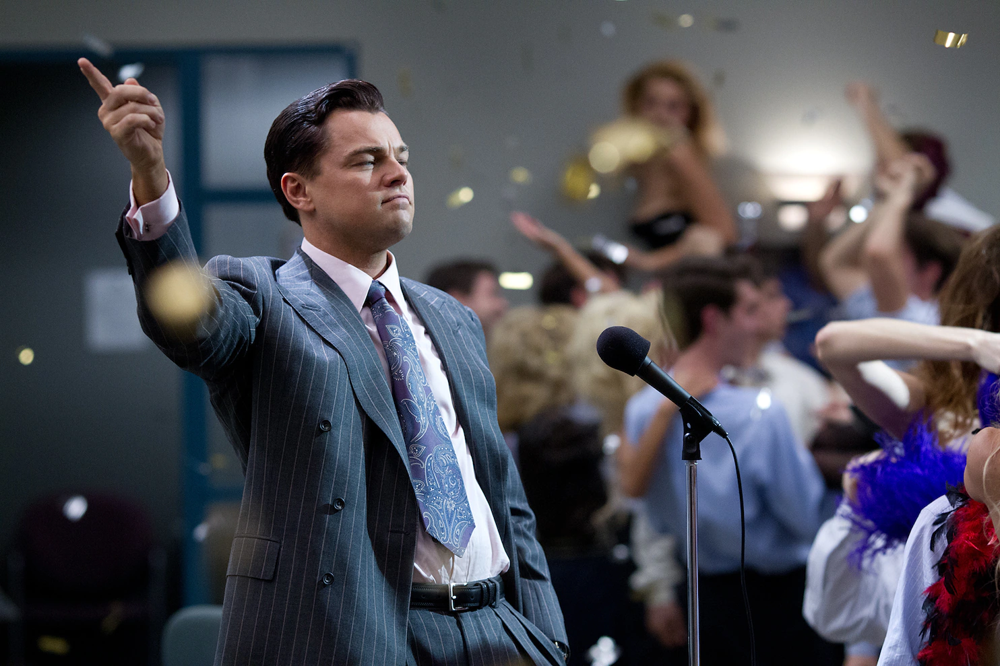

the greates moves of all time

This is one of the greatest pieces of cinematic history. "Ford v
Ferrari" is an adrenaline-fueled, sports drama that tells the true story
of Ford's quest to build a car that could beat Ferrari at the 24 Hours
of Le Mans race. The film features outstanding performances from Matt
Damon and Christian Bale, and delivers thrilling racing scenes and
emotional depth. A must-see for racing enthusiasts and moviegoers alike.
The trailer

"The Wolf of Wall Street" is a raunchy, fast-paced, and controversial
film based on the true story of stockbroker Jordan Belfort. Leonardo
DiCaprio delivers a captivating and charismatic performance, supported
by a talented ensemble cast. The film's unapologetic approach to greed
and excess may not be for everyone, but it's a wild ride from start to
finish.
The trailer

"The Hangover" is a hilarious, raunchy comedy that follows a group of friends who wake up in Las Vegas with no memory of the previous night and must retrace their steps to find their missing friend. The film's witty writing, hilarious gags, and strong performances from the ensemble cast make it a classic in the comedy genre.
The trailer
"The Dark Knight Rises" is a thrilling and epic conclusion to Christopher Nolan's Batman trilogy. The film boasts stunning action sequences, a powerful score, and an unforgettable performance from Tom Hardy as the menacing villain Bane. While it may not reach the heights of its predecessor, it remains a satisfying and satisfyingly dark superhero film.
The trailer
"Top Gun" is a thrilling, iconic 80s action film that follows the reckless fighter pilot Pete "Maverick" Mitchell, played by Tom Cruise, as he trains at the elite Top Gun school and competes to be the best. The film's stunning aerial sequences and memorable soundtrack make it a must-watch for action fans.
The trailer